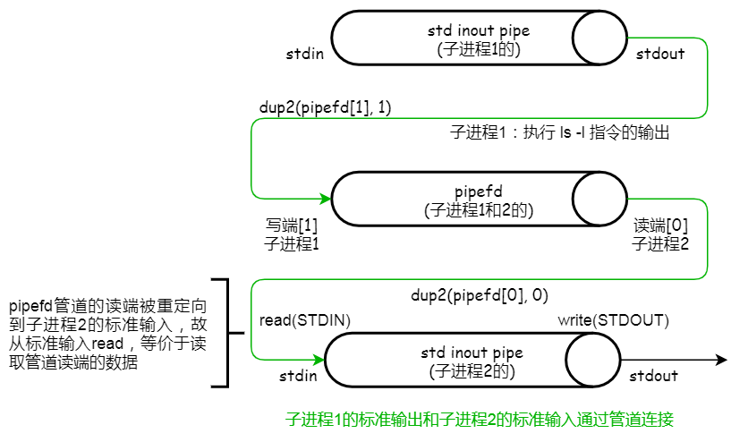

练习 sigaction
题目：使用 fork() 编写一个程序。子进程应打印 “hello”，父进程应打印 “goodbye”。你应该尝试确保子进程始终先打印。你能否不在父进程调用 wait() 而做到这一点呢？
方法一：
策略：可以使用 sleep 函数让父进程休眠，等待子进程先打印，父进程再打印即可。
缺点：sleep 多久合适？如果要求父进程要在子进程打印完后，随即让父进程打印呢？
方法二：
策略：使用信号，子进程打印后发出信号，父进程接收到信号后，执行打印操作。
方法二实现：
1 2 3 4 5 6 7 8 9 10 11 12 13 14 15 16 17 18 19 20 21 22 23 24 25 26 27 28 29 30 31 32 33 34 35 36 37 38 39 40 41 42 #include <signal.h> #include <stdio.h> #include <stdlib.h> #include <sys/types.h> #include <unistd.h> void parent_handler (int signal) { if (signal == SIGCHLD) { printf ("byebye\n" ); exit (EXIT_SUCCESS); } } void set_handler () { struct sigaction sa ; sigemptyset(&sa.sa_mask); sa.sa_flags = 0 ; sa.sa_handler = parent_handler; if (-1 == sigaction(SIGCHLD, &sa, NULL )) { exit (EXIT_FAILURE); } } int main () { pid_t cpid = fork(); if (cpid < 0 ) { exit (EXIT_FAILURE); } if (cpid == 0 ) { printf ("hello\n" ); _exit(EXIT_SUCCESS); } else { set_handler(); while (1 ) { sleep(1 ); } } return 0 ; }
子进程中的 _exit(0) 的作用？
当父进程完成等待时，父进程将通过调用常规退出函数来终止。相比之下，子进程通过调用 _exit 变体来终止，这会快速跟踪终止通知。实际上，子进程会告诉系统：「尽快」通知父进程，自己已经终止。
练习 exec
编写一个调用 fork() 的程序，然后调用 execl() 来运行程序 /bin/ls。
1 2 3 4 5 6 7 8 9 10 11 12 13 14 15 16 17 18 19 20 21 22 23 24 25 26 27 #include <signal.h> #include <stdio.h> #include <stdlib.h> #include <sys/types.h> #include <sys/wait.h> #include <unistd.h> int main () { pid_t cpid = fork(); if (cpid < 0 ) { exit (EXIT_FAILURE); } if (cpid == 0 ) { execl("/bin/ls" , "ls" , "-l" , NULL ); printf ("execl error\n" ); _exit(EXIT_FAILURE); } else { wait(NULL ); exit (EXIT_SUCCESS); } return 0 ; }
子进程调用 execl() 成功执行指定程序后，execl() 后面的代码 不会再被执行 。
练习 wait
现在编写一个程序，在父进程中使用 wait()，等待子进程完成。wait() 返回什么？如果在子进程中使用 wait() 会发生什么？
1 2 3 4 5 6 7 8 9 10 11 12 13 14 15 16 17 18 19 20 21 22 23 24 25 26 27 28 29 30 31 32 33 34 35 36 37 38 #include <signal.h> #include <stdio.h> #include <stdlib.h> #include <sys/types.h> #include <sys/wait.h> #include <unistd.h> int main () { pid_t cpid = fork(); if (cpid < 0 ) { exit (EXIT_FAILURE); } if (cpid == 0 ) { printf ("child process (PID: %d)\n" , getpid()); _exit(EXIT_SUCCESS); } else { int wstatus; pid_t wc = wait(&wstatus); printf ("parent process (PID: %d), wc: %d, wstatus: %d\n" , getpid(), wc, wstatus); if (WIFEXITED(wstatus)) { printf ("exited, status=%d\n" , WEXITSTATUS(wstatus)); } else if (WIFSIGNALED(wstatus)) { printf ("killed by signal %d\n" , WTERMSIG(wstatus)); } else if (WIFSTOPPED(wstatus)) { printf ("stopped by signal %d\n" , WSTOPSIG(wstatus)); } else if (WIFCONTINUED(wstatus)) { printf ("continued\n" ); } exit (EXIT_SUCCESS); } return 0 ; }
可以看出，整形指针 wstatus 用于存储子进程的返回状态——至于这些状态到底是哪个，可以通过系统定义的一些宏来检查。父进程中调用的 wait() 的返回值，正常情况下为子进程的 PID。
1 2 3 4 5 % ./a.out child process (PID: 669052) parent process (PID: 669051), wc : 669052, wstatus: 256 exited, status=1 %
如果将父进程中的代码块移动到子进程中，从打印可以看出，子进程异常退出，调用 wait() 失败（返回值为 -1）。
1 2 3 4 5 % ./a.out child process (PID: 669073) parent process (PID: 669073), wc : -1, wstatus: 0 exited, status=0 %
关闭标准输出
题目：编写一个程序，创建一个子进程，然后在子进程中关闭标准输出（STDOUT_FILENO）。如果子进程在关闭描述符后调用 printf() 来打印一些输出，会发生什么？
1 2 3 4 5 6 7 8 9 10 11 12 13 14 15 16 17 18 19 20 21 22 23 24 25 #include <signal.h> #include <stdio.h> #include <stdlib.h> #include <sys/types.h> #include <sys/wait.h> #include <unistd.h> int main () { pid_t cpid = fork(); if (cpid < 0 ) { exit (EXIT_FAILURE); } if (cpid == 0 ) { printf ("child process (PID: %d) is running.\n" , getpid()); close(STDOUT_FILENO); printf ("some messages after close standard output.\n" ); _exit(EXIT_SUCCESS); } else { wait(NULL ); exit (EXIT_SUCCESS); } return 0 ; }
在关闭标准输出之前，子进程会正常打印内容到屏幕。当关闭了标准输出后，printf() 函数会尝试将消息写入已关闭的文件描述符，但这样的操作会失败，因为标准输出已经不可用了。因此，printf() 函数 不会在屏幕上打印任何消息 。
标准输出连接到标准输入
题目：编写一个程序，创建两个子进程，并使用 pipe() 系统调用，将其中一个进程的标准输出连接到另一个进程的标准输入。
1 2 3 4 5 6 7 8 9 10 11 12 13 14 15 16 17 18 19 20 21 22 23 24 25 26 27 28 29 30 31 32 33 34 35 36 37 38 39 40 41 42 43 44 45 46 47 48 49 50 51 52 53 54 55 56 57 58 59 60 61 62 63 64 65 66 67 68 69 70 71 72 73 74 75 76 77 78 79 80 81 82 83 84 85 #include <signal.h> #include <stdio.h> #include <stdlib.h> #include <sys/types.h> #include <sys/wait.h> #include <unistd.h> int main () { int pipefd[2 ]; pid_t cpid1, cpid2; if (-1 == pipe(pipefd)) { perror("pipe" ); exit (EXIT_FAILURE); } cpid1 = fork(); if (cpid1 < 0 ) { perror("fork" ); exit (EXIT_FAILURE); } if (cpid1 == 0 ) { close(pipefd[0 ]); if (-1 == dup2(pipefd[1 ], STDOUT_FILENO)) { perror("dup2" ); exit (EXIT_FAILURE); } close(pipefd[1 ]); execlp("ls" , "ls" , "-l" , NULL ); perror("execlp" ); _exit(EXIT_FAILURE); } cpid2 = fork(); if (cpid2 < 0 ) { perror("fork" ); exit (EXIT_FAILURE); } if (cpid2 == 0 ) { close(pipefd[1 ]); if (-1 == dup2(pipefd[0 ], STDIN_FILENO)) { perror("dup2" ); exit (EXIT_FAILURE); } close(pipefd[0 ]); char buf; ssize_t bytes_read; while ((bytes_read = read(STDIN_FILENO, &buf, sizeof (buf))) > 0 ) { if (-1 == write(STDOUT_FILENO, &buf, bytes_read)) { perror("write" ); exit (EXIT_FAILURE); } } _exit(EXIT_SUCCESS); } else { close(pipefd[0 ]); close(pipefd[1 ]); waitpid(cpid1, NULL , 0 ); waitpid(cpid2, NULL , 0 ); exit (EXIT_SUCCESS); } return 0 ; }
本程序首先 fork 一个子进程 1，然后在父进程中再 fork 一个子进程 2。

子进程 1：
首先，关闭不使用的读端，将标准输出重定向到管道的写端 ；
然后，因为后面将调用新程序，管道的写端不会再被使用，这里应提前关闭多余的写端；
最后，调用 execlp 执行 ls 命令（进程的地址空间将会被替换为新程序的地址空间）。
子进程 2：
首先，关闭不使用的写端，将标准输入重定向到管道的读端 ；
然后，因为重定向的原因，可以提前关闭多余的读端，从标准输入读取数据（也可以先不关闭，从管道读端读取数据，读完后再关闭，但不符合本题目的要求）；
最后，从标准输入读取数据流，写到标准输出，直到字节流结束。
父进程：
直接关闭不使用的管道读端和写端；
等待两个子进程的退出。
输出：
1 2 3 4 5 6 % ./a.out 总计 40 -rwxr-xr-x 1 root root 16360 4 月 26 10:24 a.out -rw-r--r-- 1 root root 500 4 月 24 19:57 q1.c -rw-r--r-- 1 root root 961 4 月 25 10:23 q2.c %
重定向到文件
题目：编写一个程序，创建一个子进程，并使用 pipe() 系统调用，将子进程的写入管道的内容重定向到父进程指定的文件中。
1 2 3 4 5 6 7 8 9 10 11 12 13 14 15 16 17 18 19 20 21 22 23 24 25 26 27 28 29 30 31 32 33 34 35 36 37 38 39 40 41 42 43 44 45 46 47 48 49 50 51 52 53 54 55 56 57 58 59 60 61 62 63 64 65 66 67 68 69 70 71 72 73 74 #include <fcntl.h> #include <signal.h> #include <stdio.h> #include <stdlib.h> #include <string.h> #include <sys/types.h> #include <sys/wait.h> #include <unistd.h> int main () { int pipefd[2 ]; pid_t cpid; if (-1 == pipe(pipefd)) { perror("pipe" ); exit (EXIT_FAILURE); } cpid = fork(); if (cpid < 0 ) { perror("fork" ); exit (EXIT_FAILURE); } if (cpid == 0 ) { close(pipefd[0 ]); char * msg[] = { "child process: write some bytes...\n" , "child process: write some bytes, again...\n" }; int msg_len = sizeof (msg) / sizeof (msg[0 ]); for (int i = 0 ; i < msg_len; i++) { if (-1 == write(pipefd[1 ], msg[i], strlen (msg[i]))) { perror("write" ); exit (EXIT_FAILURE); } } close(pipefd[1 ]); _exit(EXIT_SUCCESS); } close(pipefd[1 ]); int redirect_fd = open("example.txt" , O_RDWR | O_CREAT | O_TRUNC, 0644 ); if (-1 == redirect_fd) { perror("open" ); exit (EXIT_FAILURE); } char buf; ssize_t bytes_read; while ((bytes_read = read(pipefd[0 ], &buf, sizeof (buf))) > 0 ) { if (-1 == write(redirect_fd, &buf, bytes_read)) { perror("write" ); exit (EXIT_FAILURE); } } close(redirect_fd); close(pipefd[0 ]); wait(NULL ); exit (EXIT_SUCCESS); return 0 ; }
该程序，创建一个匿名管道，并 fork 出一个子进程。在子进程中，负责往管道内写入一些数据；在父进程中，负责读取管道中的数据，并将数据写入指定的文件（重定向到文件）。
输出：
1 2 3 4 5 % ./a.out % cat example.txt child process: write some bytes... child process: write some bytes, again... %